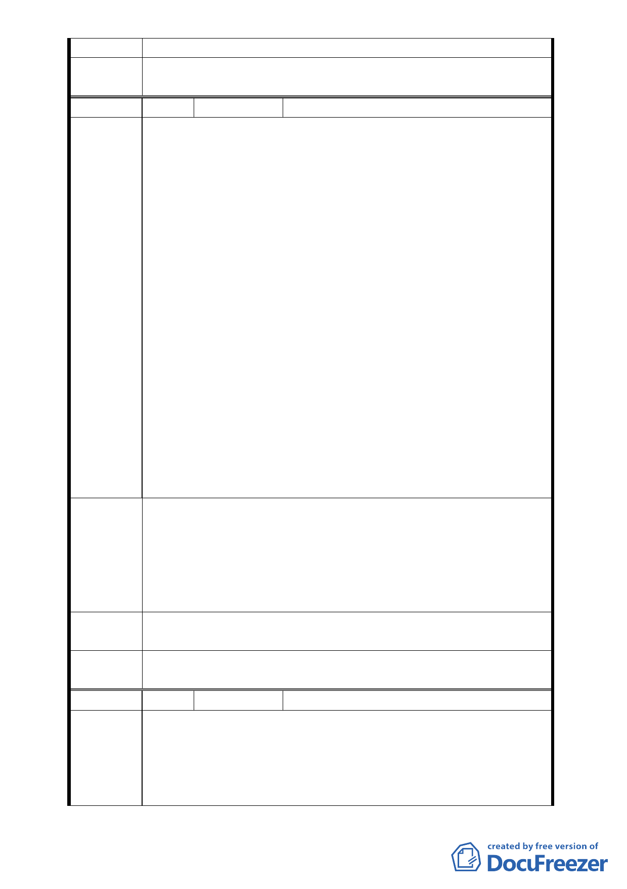

審查結論
委員會決
議
同編號 1
編 號 15
陳情人 王文生
1. 道路系統規劃不能只是局部，應有全面整體考量，說明會太
官樣文章，籠統模糊，與會之里民及列席議員竟無一人聽得
懂。
2. 未針對整體交通流量、負荷及道路需求加以分析說明，就只
提單一方案強要居民接受、背書，不但無誠意，居民也無從
選擇。
3. 竟將減輕交通負荷以Ａ型交叉路的規劃方式呈現，未考慮台
鐵機場及巨蛋體育園區開發後交通流量及需求多寡的配
合。（註：官員說此案式以文化園區為主，巨蛋園區遭監察
陳情理由
院糾正，台鐵機廠又不理會市政府）以至於南北向道路都呈
現大路通小路，小路又迴轉到大路瓶頸處然後塞住，很奇怪
的道路平衡系統。
4. 提供給里民的示意圖與電腦圖片不同，竟在右下角以圖例表
遮住本該呈現 553 巷接到刑事警察局後側到逸仙路的相關道
路規劃，有蒙騙過關之嫌。
5. 謀福當謀人民之福，謀利當謀人民之利；官員提出若辦大型
活動會根據申請做流量管制，居民根本無法認同。此案明顯
圖利富邦、遠雄…等財團，讓新仁里居民陷入生雞蛋的好處
沒有，拉雞糞（如塞車、噪音、空氣汙染…）的一大堆，太
不公平了。
1. 建議都委會組專案小組傾聽里民意見彙整後再定奪，免事後
問題叢生。
建議辦法
2. 考慮在市民高架通往永吉路底下（員機廠舊鐵軌）闢一道路
通往基隆路一段102巷左側連接永吉路及基隆路、東興路樞
紐。
3. 建議將新仁里納入開發，使里民生活品質能得到提升。
專案小組
審查結論
同編號 2
委員會決
議
同編號 1
編 號 16
陳情人 松菸公園催生聯盟
1. 本案 92 年環評審查程序違反環評法令，本聯盟已針對「臺
北文化體育園區整體規劃案」環境影響說明書無效案， 依
陳情理由
據環境影響評估法第 23 條之規定，向高等行政法院提起公
民訴訟。松菸公園催生聯盟強烈主張本案應予暫緩審查。
2. 本案規劃開闢臺北文化體育園區北側道路，此舉已嚴重影響
- 15 -